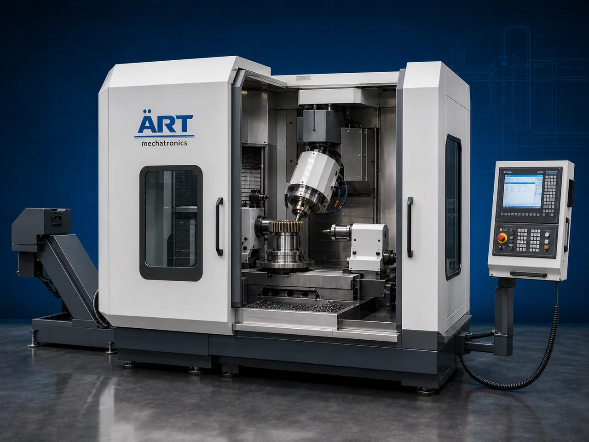

Industrial Gear Cutter Machine (Precision Gear Cutting System)
An Industrial Gear Cutter Machine, also known as a Gear Cutting Machine, Gear Manufacturing Machine, Gear Hobbing Machine, or Precision Gear Machining System, is an advanced industrial engineering solution designed for precision gear cutting, gear shaping, gear hobbing, spline cutting, tooth…

About the Gear Cutter
Industrial gear cutter systems are widely used for: ✔ Spur gear cutting ✔ Helical gear manufacturing ✔ Gear hobbing operations ✔ Spline cutting and profiling ✔ Transmission component machining ✔ Precision gear shaping ✔ Industrial gearbox manufacturing ✔ Heavy engineering machining operations
The machine improves: ✔ Gear manufacturing accuracy ✔ Production efficiency ✔ Tooth profile precision ✔ Surface finishing quality ✔ Industrial machining consistency ✔ Transmission reliability ✔ Engineering productivity
Industrial gear cutter machines use: ✔ Precision gear cutting tools ✔ Servo synchronized machining systems ✔ CNC and PLC automation controls ✔ High-rigidity machining structures ✔ Precision indexing and feed systems
to automatically manufacture high-precision gears with superior dimensional accuracy and high production efficiency.
Industrial gear cutter machines are widely used in industries such as:
Automobile industries Heavy engineering industries Gearbox manufacturing industries Machine tool industries Industrial equipment industries Power transmission industries Mining industries Steel and fabrication industries
where precision machining, high-strength gear production, and reliable transmission performance are essential.
The machine is highly suitable for: ✔ Spur and helical gear cutting ✔ Industrial gearbox manufacturing ✔ Shaft and spline machining ✔ Transmission component production ✔ Precision engineering operations ✔ Heavy-duty industrial machining
ART Mechatronics offers high-performance industrial gear cutter machines, engineered for continuous industrial operation, precision gear machining performance, high structural rigidity, and reliable long-term engineering productivity.
Working Principle of Industrial Gear Cutter Machine
- 1. Raw Material Loading & Clamping Gear blanks or metal workpieces are securely loaded and clamped into machining section.
- 2. Gear Positioning & Tool Synchronization Process Machine automatically aligns gear blanks and synchronizes cutting tools for accurate gear tooth generation.
Servo synchronized machining ensures precision gear cutting and smooth machining operations.
- 3. Gear Cutting Operation Machine handles machining of: ✔ Spur gears ✔ Helical gears ✔ Bevel gears ✔ Worm gears ✔ Sprockets ✔ Splines ✔ Shafts ✔ Industrial transmission components
accurately and continuously.
- 4. Precision Gear Machining Process Machine performs: Gear hobbing Gear shaping Tooth profiling Spline cutting Gear finishing Indexing operations Precision machining
for efficient industrial gear manufacturing operations.
- 5. Intelligent Automation & Quality Integration Optional systems include: CNC automation systems Automatic lubrication systems Tool wear monitoring Vision inspection systems Coolant circulation systems
- 6. Finished Component Discharge Finished gear components discharged automatically for: Gearbox assembly Transmission systems Industrial machinery integration Warehouse storage Export shipment handling
Types of Industrial Gear Cutter Machines
- 1. Gear Hobbing Machine Designed for: ✔ High-speed gear manufacturing applications
- 2. Gear Shaping Machine Suitable for: ✔ Precision internal and external gear cutting operations
- 3. CNC Gear Cutter Machine Uses: ✔ Automated high-precision gear machining systems
- 4. Bevel Gear Cutting Machine Designed for: ✔ Angular and bevel gear manufacturing operations
- 5. Worm Gear Cutting Machine Suitable for: ✔ Precision worm gear machining systems
- 6. Fully Automatic Industrial Gear Manufacturing System Designed for: ✔ Complete industrial gear production automation lines
Industries Using Industrial Gear Cutter Machines
🚗 Automobile Industry Transmission gears, differential gears, and automotive gearbox manufacturing systems. ⚙️ Heavy Engineering Industry Industrial machinery gears and heavy-duty transmission component manufacturing systems. 🏭 Gearbox Manufacturing Industry Precision industrial gearbox gear production systems. ⛏️ Mining & Construction Industry Heavy-duty machine gear and power transmission systems. 🔩 Machine Tool Industry Precision engineering and industrial machining operations. 🏗️ Steel & Fabrication Industry Industrial drive systems and transmission gear manufacturing systems.
Features & Advantages
✔ High-precision gear cutting and machining operation ✔ Accurate tooth profile generation systems ✔ Heavy-duty industrial machining structure ✔ CNC, PLC, and servo automation control systems ✔ Improves gear manufacturing efficiency and quality ✔ Reduces manual machining dependency ✔ Supports multiple gear types and machining operations ✔ Reliable long-term industrial performance ✔ Smooth integration with industrial production lines
Technical Highlights
Machine Type: Industrial gear cutter machine Gear manufacturing system Precision gear machining machine Component Compatibility: Spur gears Helical gears Bevel gears Worm gears Splines Transmission shafts Integration: CNC machining systems Servo synchronization systems Automatic lubrication systems Precision indexing systems Features: PLC control system Touchscreen HMI Heavy-duty machining structure Precision gear tooling systems Coolant circulation systems Applications: Gear manufacturing Transmission component machining Spline cutting Industrial gearbox production Precision engineering operations Automation: Semi-automatic Fully automatic CNC industrial systems
Turnkey Gear Manufacturing Solutions
ART Mechatronics offers: Complete gear cutting systems Automatic gear manufacturing solutions Industrial machining automation systems Precision engineering integration systems Installation & commissioning After-sales service & AMC
Why Choose Art Mechatronics
Expertise in industrial machining and automation systems Customized gear cutting solutions for multiple industries High-performance and precision machining technology Advanced CNC, PLC, and servo automation systems Proven industrial engineering performance across sectors
Applications
Automobile Manufacturing Plants Gearbox Manufacturing Facilities Heavy Engineering Industries Industrial Machinery Plants Mining Equipment Manufacturing Units Steel & Fabrication Industries
Industries that use the Gear Cutter
Related Process Equipment machines
Get pricing & specs for the Gear Cutter
Share the product, target capacity, current process and plant location. These details help our engineers discuss the right machine or line configuration.
One partner, from design to start-up
ART Mechatronics designs, manufactures, installs and commissions your Gear Cutter solution with regional presence in India, UAE and Thailand.